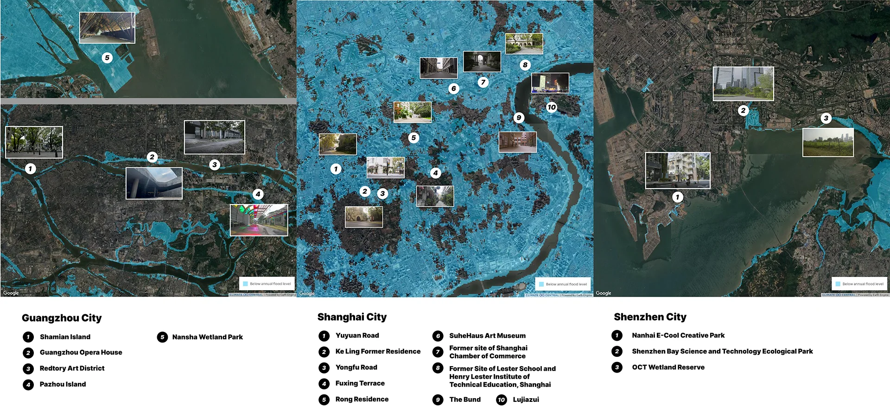
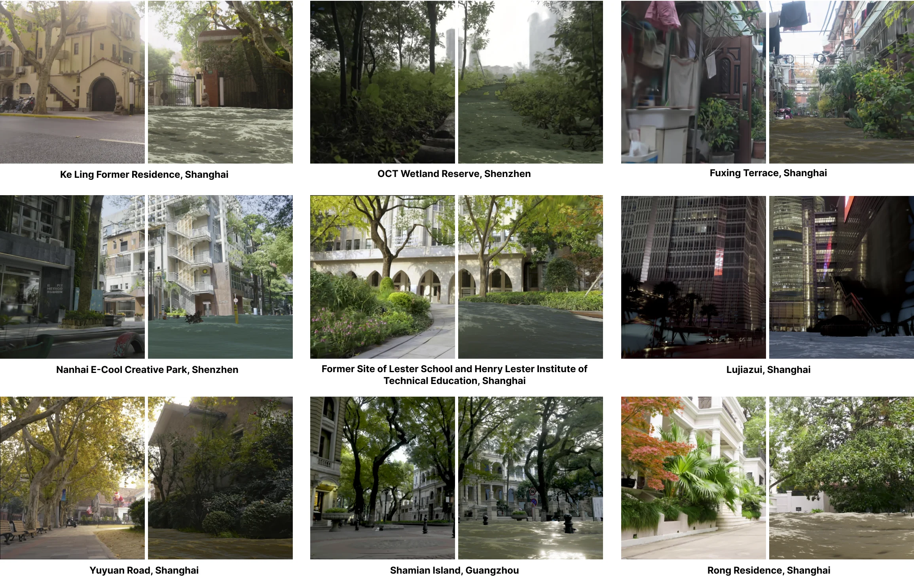
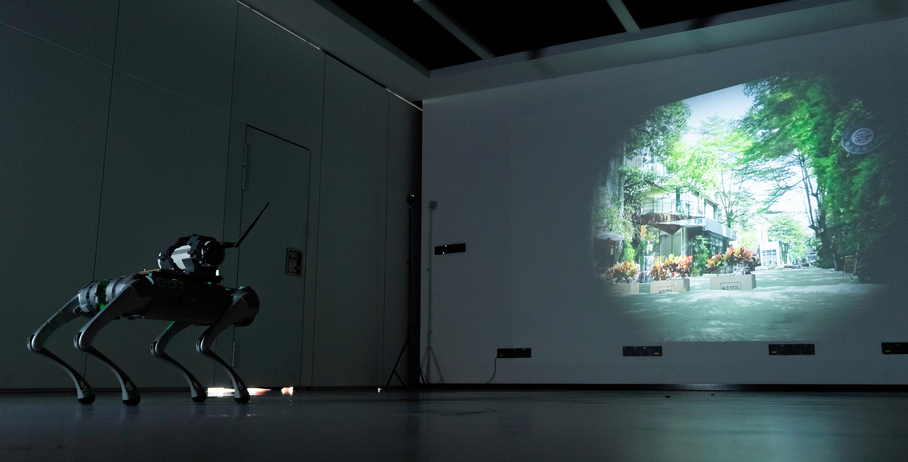
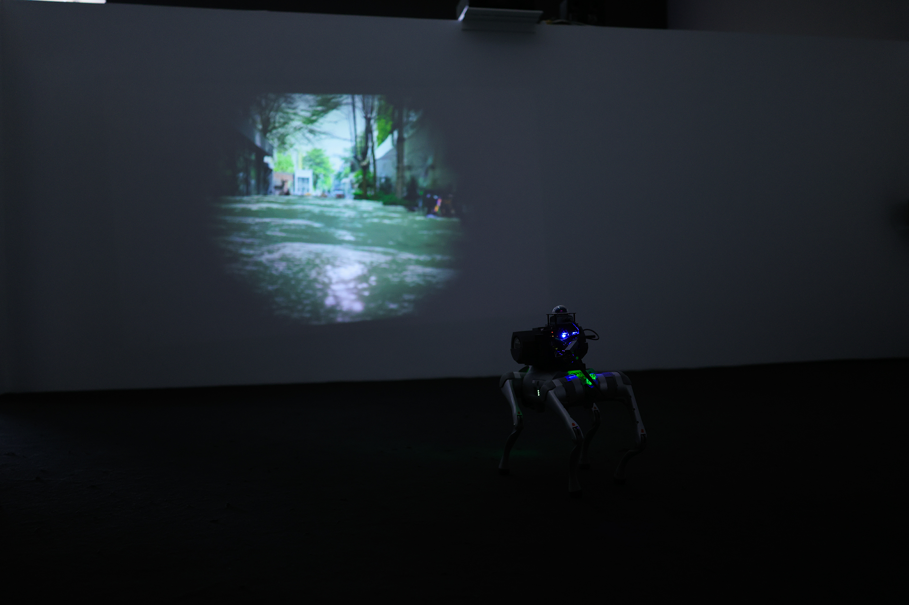
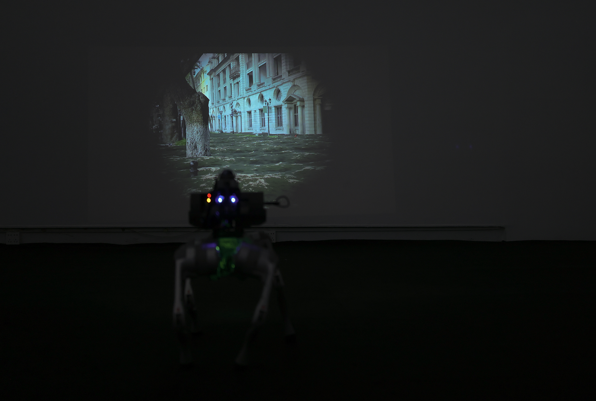
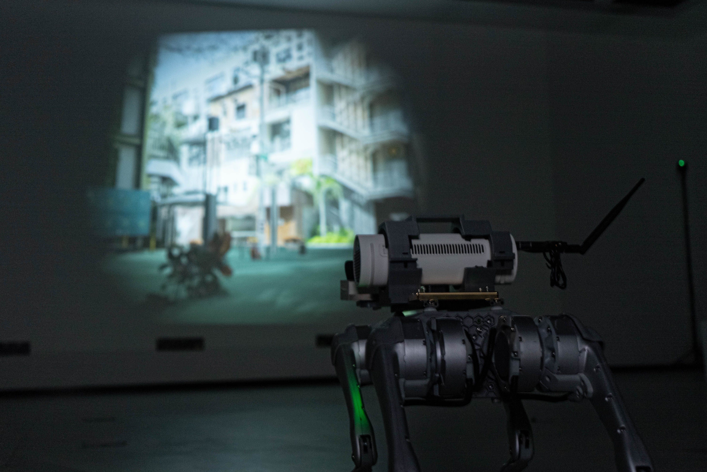

Drift of the Uncharted
Drift of the Uncharted emerges as a robotic art installation, intertwining climate prediction, real-world landscape scanning, scene reconstruction, game engines, and virtual projection to unfurl a speculative world where urban landscapes bear the imprints of future sea-level rise, creating an immersive exploration of climate change's potential impacts. The project utilizes 3D Gaussian Splatting for reconstructing regions prone to the impacts of sea-level rise while computer-generated water are integrated into the scenario through a game engine. A quadruped robot equipped with a projector traverses the physical and virtual space, projecting sea level rise scenes onto the exhibition area, as if it were a spectral agent of humanity, peering into the drowned cityscapes.


To illustrate the profound impact of future sea-level rise on urban environments, we selected Shanghai, Shenzhen, and Guangzhou as the primary locations for scene reconstruction. We utilized Climate Central's Coastal Risk Screening Tool with 2050 as the projection year. The model, based on IPCC 2021 data, projects combined impacts of local sea level rise and annual flood heights, assuming current emission policies and a projected global temperature increase of 3.6°C by 2100. The analysis employed the 50th percentile of projections for heat-trapping pollution's impact on sea levels, excluding areas isolated by elevated terrain. The rationale for choosing these cities lies in their status as coastal metropolises with developed economies and high population densities, making them particularly vulnerable to the effects of sea-level rise—especially Shanghai. From the areas highlighted in blue on the projection maps - indicating zones vulnerable to sea-level rise and annual flooding - we identified specific locations of cultural and urban significance, including cultural institutions, historic architectural sites, financial centers, old town districts, and wetlands, all of which are deeply intertwined with resident life and collective urban memory.
The rationale for choosing these cities lies in their status as coastal metropolises with developed economies and high population densities, making them particularly vulnerable to the effects of sea-level rise—especially Shanghai. From the areas highlighted in blue on the projection maps—indicating zones vulnerable to sea-level rise and annual flooding—we identified specific locations of cultural and urban significance, including cultural institutions, historic architectural sites, financial centers, old town districts, and wetlands, all of which are deeply intertwined with resident life and collective urban memory.



